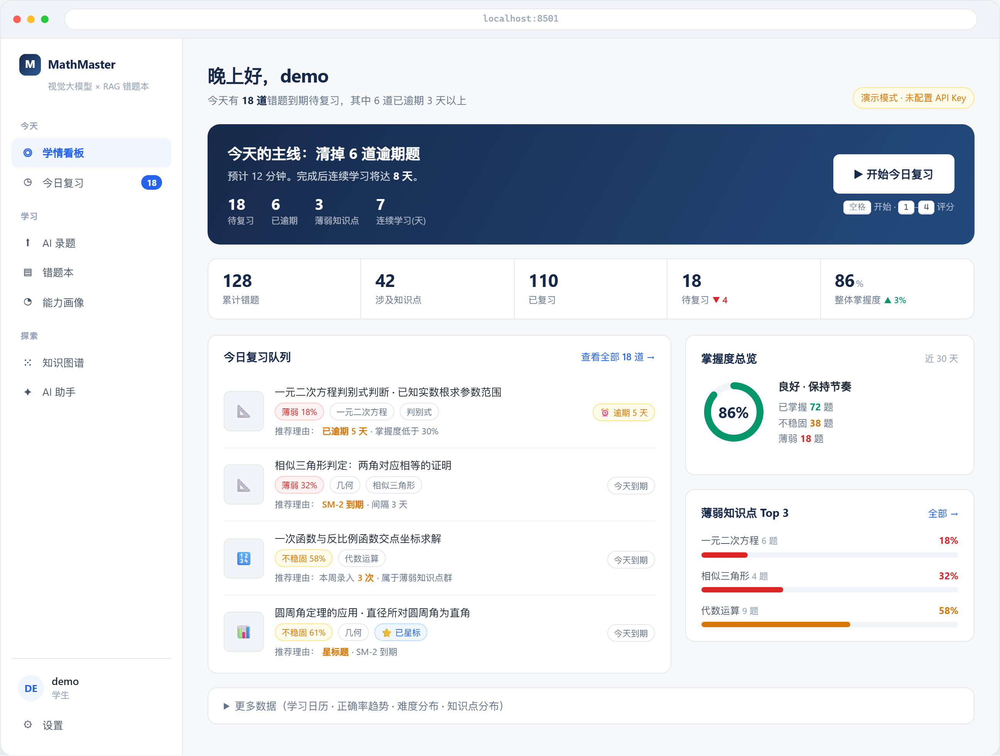
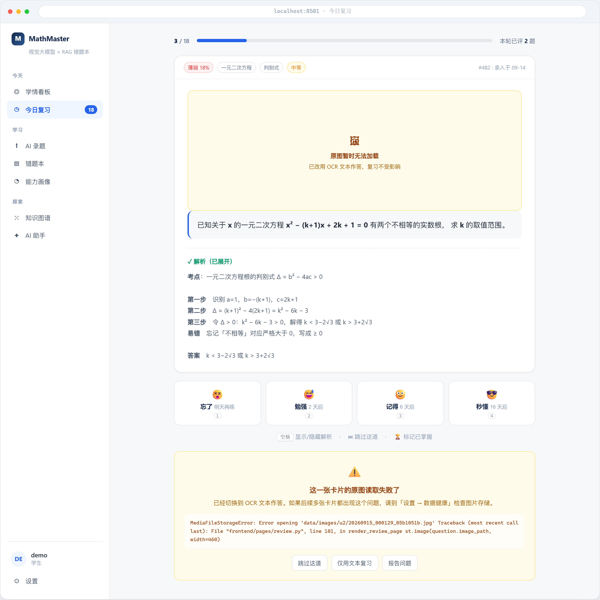
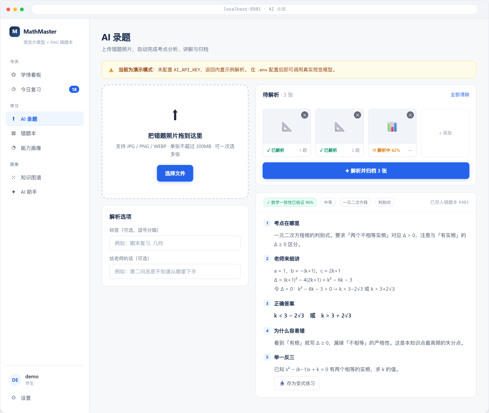
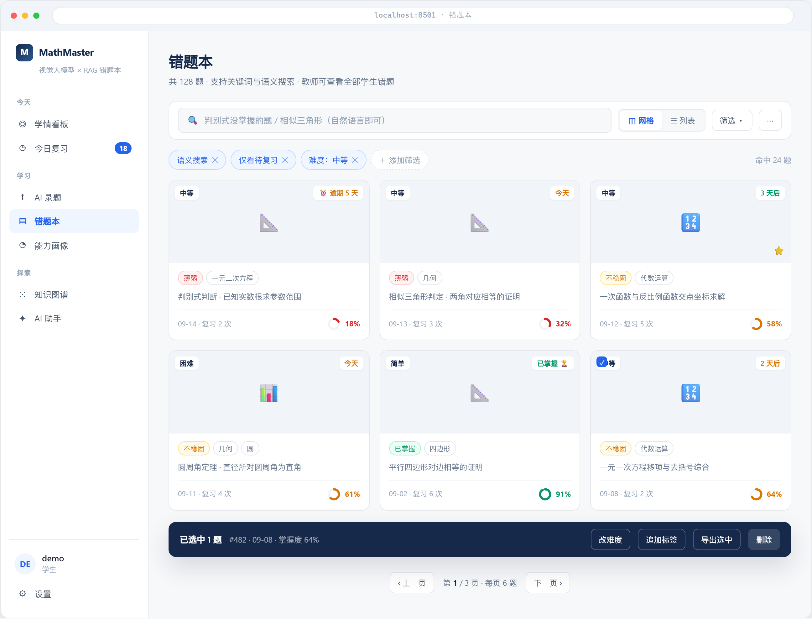

批 1-4 已落地之后的现状核实, 与剩余工作的施工规格
safe_call / error_card /
badge / empty_state / mastery_color 五个原语都写好了,
CSS 变量与三档语义色也进表了, 侧边栏也分组了。
但其中三个原语目前全库零调用, 七个页面仍然在裸调 service。
当前最大的问题不是"还缺什么", 而是"建好了没人用"。
下一批的收益不在于加新功能, 而在于把已有地基接上。
frontend/ 与少量 backend/utils/。
六个批次的真实落地状态, 依据当前工作区代码逐项核实, 不依赖提交信息。
| 批次 | 主题 | 状态 | 核实结论 |
|---|---|---|---|
| 1 | 止血 · 错误边界 | 部分 | safe_call() 与 error_card 已实现, 但仅 3 个页面 5 处在用;
dashboard / notebook / tutor / settings / students / assistant / auth 七个文件仍是裸调。
tutor.py:205 的图片路径遗漏未改 —— 正是原方案点名的位置。 |
| 1b | 图片路径相对化 | 部分 | 写入端 question_mixins.py:392 已走 to_stored_path();
读取端 backend/utils/paths.py:23-30 提供 resolve_image_path();
迁移脚本 scripts/migrate_image_paths.py 就位。
frontend/ 内已无裸 os.path.exists。
剩余: tutor.py:205 直接用库存值, 无解析也无存在性检查。 |
| 2 | 地基 · CSS 变量与语义色 | 部分 | style.css:4-18 已有 13 个变量, --weak / --shaky / --good 三档就位。
但 [data-theme="dark"] 变量对没做 —— theme.py:13-22 仍是
:root, .stApp 整块重定义 + 20 余条 !important 组件补丁。 |
| 3 | 原语 · 五个公共件 | 未接上 | badge() 与 empty_state() 已定义, 全库零 import。
mastery_color() 仅 dashboard.py:261 一处调用, 另 4 处各写各的。
stat_card() 收到 7 处, 但 review.py:131-139 仍是手写副本。 |
| 4 | 导航 · 分组与待办 | 已落地 | nav.py:20 已有 group 字段与 GROUP_LABELS, 9 项全标组;
app.py:104-116 三组循环渲染。
待办数是 app.py:98-101 的文字后缀 "今日复习 · 18",
非红点 —— sac.MenuItem 标题不支持 HTML 徽标, 属组件能力边界。 |
| 5 | 页面 · 看板/复习/录题 | 2 / 11 | 已做: 复习进度按已完成数 review.py:141-142;
看板今日主线文案 dashboard.py:159-169。
评分档 format_interval 预览 review.py:190-195。
其余 8 项未做, 详见第 04 节。 |
| 6 | 难点 · 错题本卡片网格 | 未开始 | notebook.py 400 行一行未改。且存在一个功能性缺陷, 详见第 05 节。 |
方案 v1.0 记录的债务数字, 在批 1-4 落地后需要重新核对。以下是按当前工作区重新数的结果。
components.py:86（q.content_markdown 全文）、
tutor.py:215（analysis.analysis）、
tutor.py:229-232（题干摘要塞进 <span>）、
review.py:173 / 176 / 184。
components.py:117-122 先 re_escape_and_mark 转义再高亮。
收口方式已有现成范式, 照抄即可。
shaky 出现两个值: common.py:80-83 与 graph.py:13-18 是
#d97706, 而 mastery.py:15 与 notebook.py:249-254 是
#94a3b8。good 同样分裂: #059669 vs #2563eb。
style.css:133 的 .mm-mastery__fill--weak
填的是 #d97706（琥珀）, 类名说 weak 却是 shaky 的色, 且全库无人使用该 class。
mastery_color() 已经写好了, 这 4 处替换是纯机械改动。
.mm-empty HTML 两处（notebook.py:180、mastery.py:71）、
st.info 五处、st.caption 五处以上、
st.success 表达"无数据"（review.py:78,82）。
empty_state() 支持可选的下一步按钮, 这正是现在缺的。
frontend/pages/ 下没有任何文件 from frontend.i18n import。
只有 nav.py:10 与 app.py:30 在用。全部页面标题与按钮文案硬编码中文。
短期不影响使用, 但一旦要加第二种语言就是全面返工 —— 建议至少让新增页面走 key。
theme.py:13-22 的深色块重定义了 --bg / --card / --navy / --slate / --border 等,
但漏了 --weak / --shaky / --good。
后果: mastery_color() 返回 var(--weak) 这类引用,
深色模式下仍取浅色模式的 #dc2626, 在深底上对比度不足。
theme.py:23-43 仍有 20 余条 !important 组件补丁, 新组件必漏。
按"确定性缺口优先"排序。前三项都是函数已存在、只是没人调, 风险最低、收益最直接。
| 序 | 动作 | 工作量 | 落点与验收 |
|---|---|---|---|
| 1 | 接上 empty_state() |
小 | notebook.py:180-188、mastery.py:71-77 两处手写 HTML 换成原语,
并补上"去录题"「清除筛选」的下一步按钮。验收: 错题本与画像页的空状态都能一键跳到下一步。 |
| 2 | 补 tutor.py:205 图片解析 |
小 | 该行是批 1 原方案点名的位置, 当时漏改。直接用
resolve_image_path() + error_card。验收: 图片被清理后录题结果页不再抛异常。 |
| 3 | 接上 badge() 与 mastery_color() |
小 | 替换 mastery.py:15、graph.py:13-18、notebook.py:249-254
四处自写色表; 7 个页面裸拼的 mm-badge f-string 收成原语。验收: 全库搜索 #94a3b8 与 #d97706 各只剩定义处一处。 |
| 4 | 七个页面补 safe_call |
中 | dashboard.py:145、notebook.py:63/85/98/110、
tutor.py:15/226、settings.py 七处、
students.py:151-211、assistant.py 四处、auth.py。
students.py:141-148 的手写 except 应并入。验收: 全库再无裸调 service 的地方。 |
| 5 | 收口 6 处 AI 内容渲染 | 中 | 改用 st.markdown(text) 不带 unsafe_allow_html;
确需富文本的先过 html.escape。验收: unsafe_allow_html 降到 30 处以内, 且无一处接收 AI 输出。 |
| 6 | 深色模式补语义色变量 | 小 | theme.py:13-22 补 --weak / --shaky / --good 的深色取值。验收: 深色模式下三档色环与徽章对比度达标。 |
看板 / 复习 / 录题 三页逐项对照。已完成的两项列在最前, 供确认方向。

dashboard.py:159-169 今日主线是一行 mm-card 纯文本, 无跳转按钮、无目标数字dashboard.py:181-193 四个平铺 st.button, 与上方统计卡等权重dashboard.py:199-212 周环比拼进文字 banner, 无独立指标<details> 折叠
review.py:141-142 进度按已完成数, 首题即 1/Nreview.py:190-195 每档 format_interval(preview.next_interval)st.caption 移进按钮内, 视觉上成为按钮的一部分review.py:41,50）st.session_state 读写、grade_review（:198）、
restore_review_state（:113）全部走 safe_callerror_card 降级 —— 切 OCR 文本继续复习, 原始异常折叠供排查
tutor.py:205 原图裸用库存路径, 无解析无检查resolve_image_path() + error_card（同时是第 03 节第 2 项）tutor.py:202-235 两栏布局 + 裸 Markdown, 无五段结构tutor.py:189-199 状态只是 expander 前缀 ✅/❌ + st.error(str(exc))error_card 而非裸异常字符串st.session_state, 刷新后可恢复
notebook.py 400 行一行未改。动手前必须先解决下面这个功能性缺陷, 否则后面的批量操作都建不起来。
notebook.py:233 的 selected_ids 是函数局部变量，每轮 rerun 重建。
而勾选框 notebook.py:266 嵌在 with st.expander(...) 内部 ——
只有当时处于展开状态的那 8 个 checkbox 会被实例化。
selected_ids 恒为空, 批量操作条永远不出现。
st.session_state["sel_{id}"] 持状态,
底部操作条改为常驻渲染（按选中数决定是否展开按钮组）。

| 落点 | 规格 |
|---|---|
notebook.py:259-267 |
元数据现在全部拼进 expander_title 字符串（到期标记 / 星标 / 标签 / 难度 /
日期 / 掌握度 / 未读 7 类信息挤一行）。
规格: 拆成卡片四层 —— 缩略图 / 标签组 / 掌握度色环 / 到期状态。掌握度用 mastery_color()。 |
notebook.py:38-177 |
筛选区（5 个 toggle + 2 个下拉 + 搜索框）占首屏约 60%。
规格: 收成一行工具条 —— 搜索框 + 视图切换 + st.popover 筛选抽屉 + ⋯ 导出菜单。
当前生效条件用 chip 回显, 取代三个大导出按钮。 |
notebook.py:95-96 |
col_export 是个只塞了 <br> 的空占位列, 删掉。 |
notebook.py:269-309 |
批量条在列表之后条件渲染, 每次 rerun 重建 6 个按钮。
规格: 改常驻底部条 + st.session_state 持选择状态（见上方红框）。 |
notebook.py:215-231 |
分页器在列表上方, 视线要来回跳。规格: 移到列表下方, 补充"命中 N 题 / 每页条数"。 |
st.image 只输出图片节点, 没有 HTML 包裹与 hover 层。卡片上的悬浮操作按钮做不出来, 勾选框必须占据静态位置。st.columns, 但每张卡的独立按钮/勾选会各自占垂直空间, 与"卡片等高"冲突 —— 需接受一定的高度参差, 或改为固定行高的纯展示卡 + 单独操作区。这两项不定, 后面会返工。
backend/services/mastery.py,
复习日志时间加权 + 遗忘衰减, 阈值 0.4 / 0.7）; 另一套是看板的标签级启发式估算
（复习表现 + 调度间隔的看板口径）。用户可见的数据会不自洽。
stats.py 里的一个方法,
改动范围可控。
mastery_color() 的全站替换 ——
换色是低成本的, 换口径是可能牵动看板/画像/图谱三处的。先定口径, 再统一颜色。
:root, .stApp 整块重定义 + 20 余条 !important 组件补丁。
每加一个新组件就要记得加一条, 漏了就白底黑字。
[data-theme] 变量对的收益是"以后不用打补丁",
成本是要把所有组件的硬编码色值改成变量引用 —— 在批 5 页面重排还没做完之前做这个,
会和页面改动搅在一起, 不好回归。